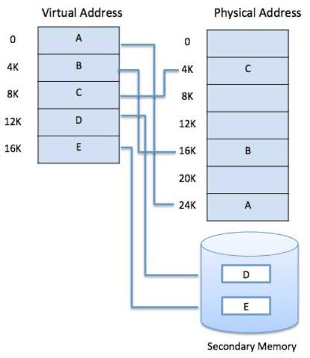

A computer can address more of the memory than the physically installed amount on the system. This extra memory is actually referred to as virtual memory which is a section of a hard disk set up to emulate the RAM of the computer.
The main obvious advantage of this scheme is that it can be larger than physical memory programs. Virtual memory serves in two forms. Firstly, it allows us to extend the use of physical memory by disk use. Second , it allows us to protect memory, because every virtual address is translated into a physical address.
Following are the situations when it is not necessary to fully load the entire program in the main memory:
Modern microprocessors intended for general-purpose use, a memory management unit, or MMU, is built into the hardware. The MMU's job is to translate virtual addresses into physical addresses. A basic example is given below −
Virtual memory is commonly implemented by request paging. It can also be implemented in a system of segmentation. Virtual memory can also be used to provide segmentation of demand.